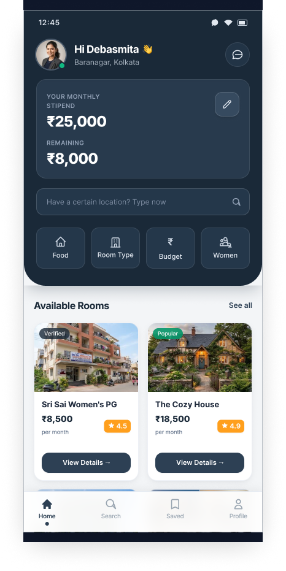
screens · original supplied asset
Home dashboard with stipend card, search, shortcuts, available rooms (unaltered copy)
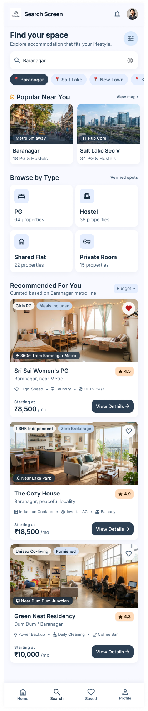
screens · original supplied asset
Search screen: location chips, popular areas, browse by type, recommendations (unaltered copy)
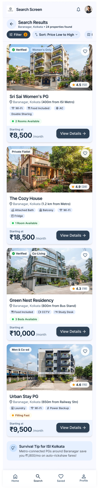
screens · original supplied asset
Search results list with filter, sort and property cards (unaltered copy)
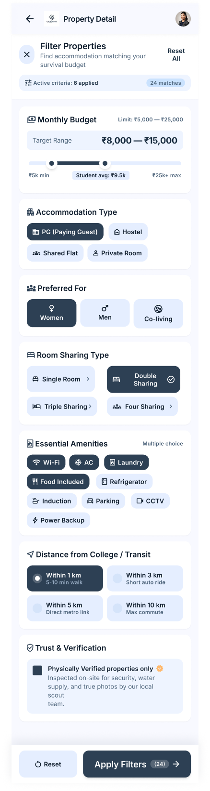
screens · original supplied asset
Filter panel: budget, type, preference, sharing, amenities, distance, verification (unaltered copy)
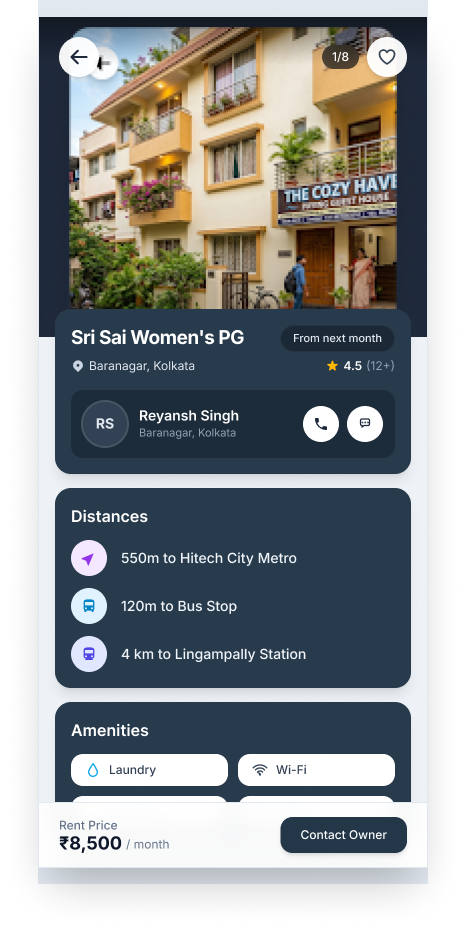
screens · original supplied asset
Property details with owner, distances, amenities and Contact Owner (unaltered copy)
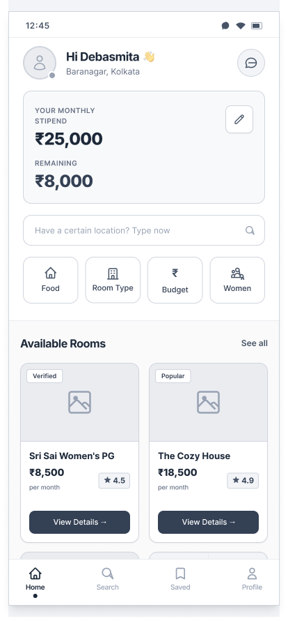
wireframes · original supplied asset
Home wireframe (unaltered copy)
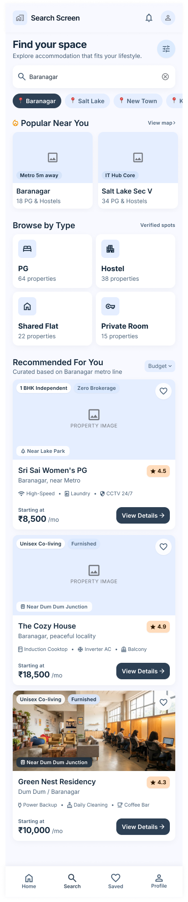
wireframes · original supplied asset
Search wireframe (unaltered copy)
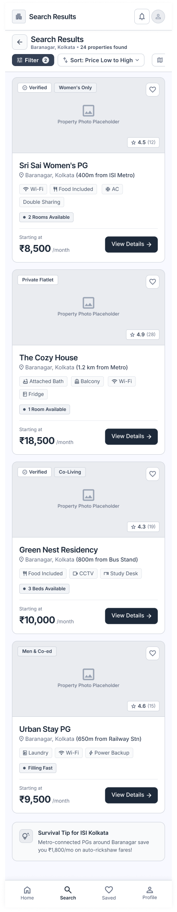
wireframes · original supplied asset
Search results wireframe (unaltered copy)
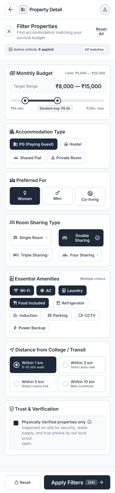
wireframes · original supplied asset
Filters wireframe (unaltered copy)
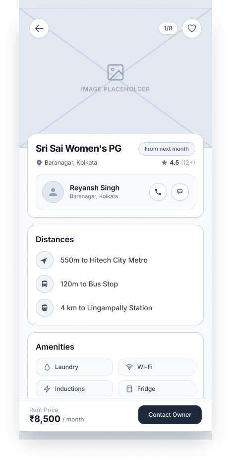
wireframes · original supplied asset
Property details wireframe (unaltered copy)
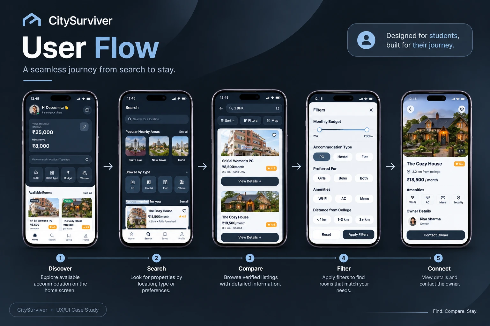
graphics · original supplied asset
User flow graphic: Discover, Search, Compare, Filter, Connect (WebP conversion only)
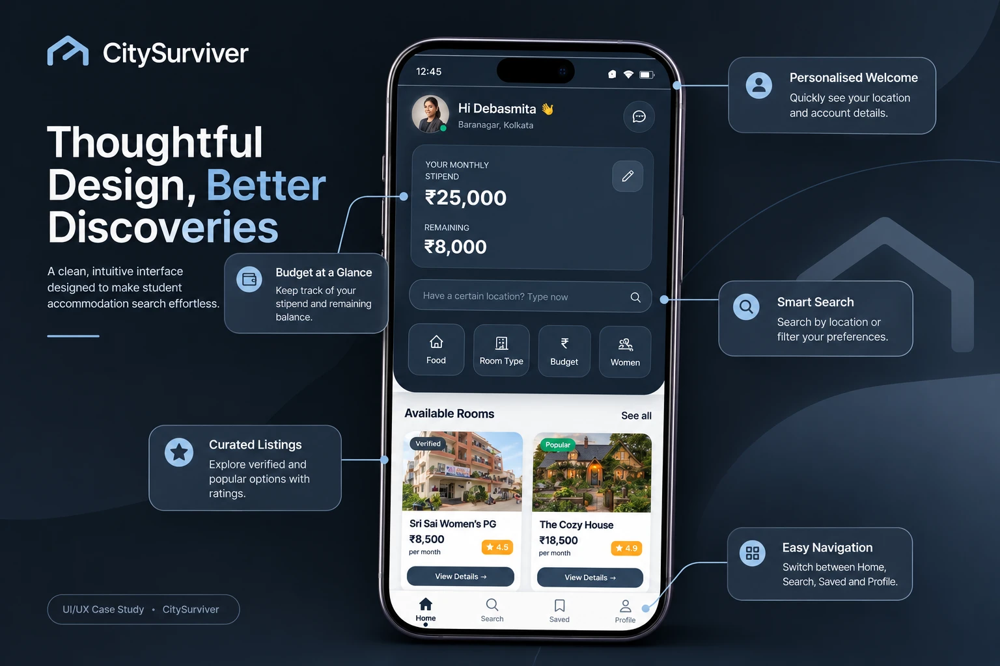
graphics · original supplied asset
Annotated home screen graphic (WebP conversion only)
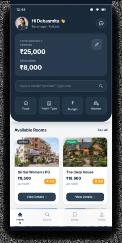
thumbnails · newly created supporting asset
Thumbnail of citysurviver-home.png
thumbnails · newly created supporting asset
Thumbnail of citysurviver-search.png
thumbnails · newly created supporting asset
Thumbnail of citysurviver-search-results.png
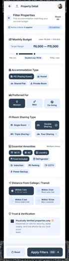
thumbnails · newly created supporting asset
Thumbnail of citysurviver-filters.png
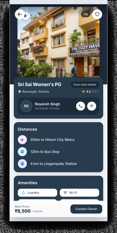
thumbnails · newly created supporting asset
Thumbnail of citysurviver-property-details.png
branding · newly created supporting asset
Simple house mark for the case-study site (not the app logo)
icons · newly created supporting asset
Browser favicon
backgrounds · newly created supporting asset
Subtle editorial grid tile
illustrations · newly created supporting asset
Dotted connector divider
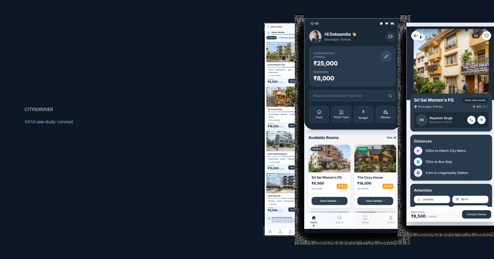
generated · newly created supporting asset
Composition of unaltered screens for link previews